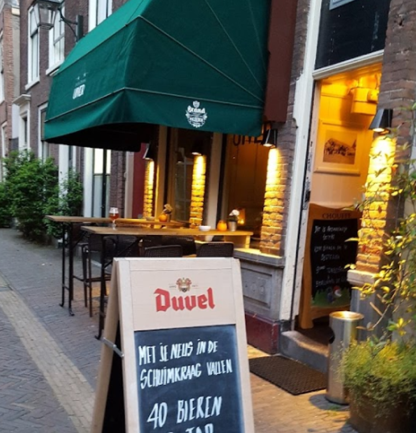
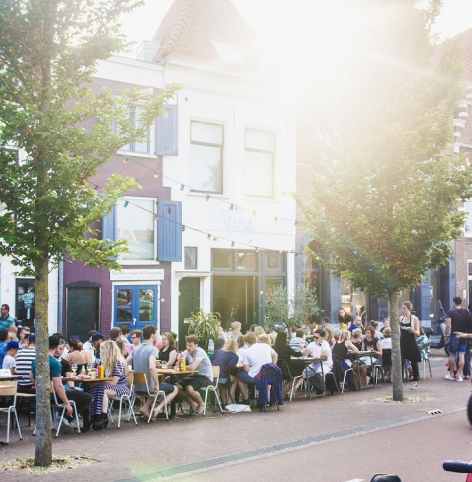
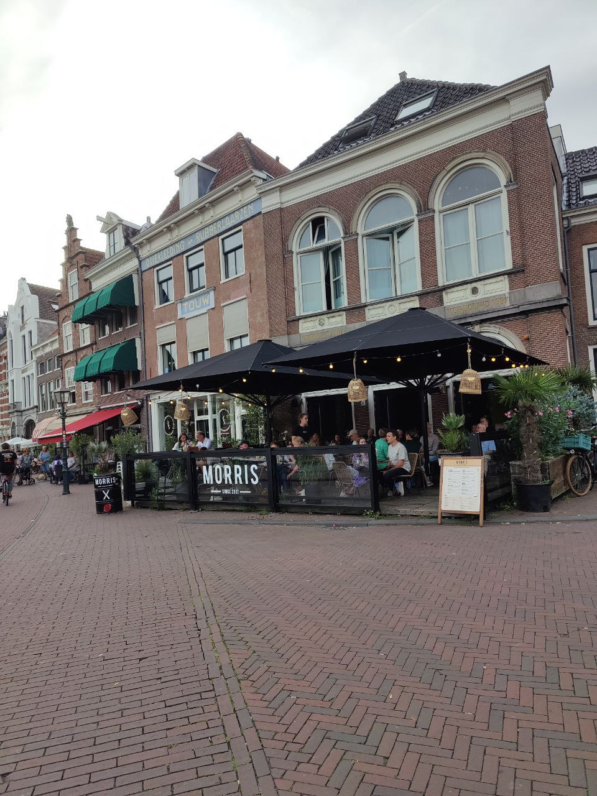

Restaurants
Haarlem boasts several restaurants that serve traditional Dutch cuisine. You can savor the flavors of the Netherlands at place like 'De Uiver'
Being located near the North Sea, Haarlem is an ideal place to indulge in fresh seafood. Seafood restaurant like 'Fishbar Monk' and 'Taverne de Waag' offer delectable dishes ranging from herring to mussels, often served with a view of the city's picturesque canals.
Haarlem's cosmopolitan nature is reflected in its diverse international dining options. Explore the world through your taste buds at restaurants like 'Spaarne 66' and 'Morris'


